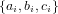
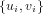
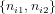
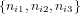

= n∙1∕(n∙1 + n∙2). In other words, the
maximum likelihood solution is found by pooling all the counts together. A 100(1 - α)% confidence interval for θ is
given by:
= n∙1∕(n∙1 + n∙2). In other words, the
maximum likelihood solution is found by pooling all the counts together. A 100(1 - α)% confidence interval for θ is
given by:
Abstract
Point-counting data are a mainstay of petrography, micropalaeontology and palynology. Conventional statistical analysis of such data is fraught with problems. Commonly used statistics such as the arithmetic mean and standard deviation may produce nonsensical results when applied to point-counting data. This paper makes the case that point-counts represent a distinct class of data that requires different treatment. Point-counts are affected by a combination of (1) true compositional variability and (2) multinomial counting uncertainties. The relative significance of these two sources of dispersion can be quantified by a chi-square statistic and -test. For datasets that pass the chi-square test for homogeneity, the ‘pooled’ composition is shown to represent the optimal estimate for the underlying population. It is obtained by simply adding together the counts of all samples and normalising the resulting values to unity. However, more often than not, point-counting datasets fail the chi-square test. The overdispersion of such datasets can be captured by a random effects model that combines a logistic normal population with the usual multinomial counting uncertainties. This gives rise to the concept of a ‘central’ composition as a more appropriate way to average overdispersed data. Two- or three-component datasets can be displayed on radial plots and ternary diagrams, respectively. Higher dimensional datasets may be visualised and interpreted by Correspondence Analysis (CA). This is a multivariate ordination technique that is similar in purpose to Principal Component Analysis (PCA). CA and PCA are both shown to be special cases of Multidimensional Scaling (MDS). Generalising this insight to multiple datasets allows point-counting data to be combined with other data types such as chemical compositions by means of 3-way MDS. All the techniques introduced in this paper have been implemented in the provenance R-package, which is available from http://provenance.london-geochron.com.
The mineralogical composition of silicilastic sediments can be determined by tallying the occurrence of
various minerals in a representative sample of (200-400, say) grains (Dryden, 1931; Van der Plas and
Tobi, 1965; Weltje, 2002). Similarly, the fossil content of a deep sea sediment core may be characterised by
tabulating the relative abundances of various species among >100 randomly selected specimens (Patterson
and Fishbein, 1989; Buzas, 1990; Fatela and Taborda, 2002). Or palaeobiological environments may be
reconstructed by tabulating the relative frequency of different types of pollen in a palaeosol or charcoal
(Barkley, 1934; Clark, 1982; Weng et al., 2006).
These are all examples of multivariate counting experiments, in which the unknown proportions of different species
of minerals, fossils or pollen are estimated by counting a finite number of randomly selected items from a representative
sample. Despite the widespread use of this type of data in the Earth Sciences and related fields, their statistical analysis
is demonstrably underdeveloped.
For example, there currently exists no agreed method to average multi-sample point-counting datasets, or to
quantify point-counting data dispersion. Traditionally, these operations were done by taking the arithmetic
mean and standard deviation, respectively. Unfortunately, this may easily produce nonsensical results. For
example, Weltje (2002) shows that the common practice of using ‘2-sigma’ confidence bounds around
the arithmetic mean can produce physically impossible negative values when applied to petrographic
point-counts.
To solve these problems, Weltje (2002) argues that point-counts should be treated as compositional data, which are
defined as “vectors representing parts of a whole that only carry relative information” (Pawlowsky-Glahn and
Buccianti, 2011). According to this definition, compositional data can be renormalised to a constant sum (e.g., 100%
if the composition is expressed as percentages, or 1 if fractions are used) without loss of information.
Aitchison (1982, 1986) shows that the statistical analysis of such data is best carried out using a simple logratio
transformation.
To illustrate this approach, let  be a three-component dataset, where ai + bi + ci = 1 for 1 ≤ i ≤ m. Then this dataset can be mapped to a bivariate Euclidean data space as follows:
|
| (1) |
After performing the desired statistical analysis (such as calculating averages and confidence regions) on the transformed data , the results can be mapped back to the ternary diagram by means of an inverse logratio transformation:
|
| (2) |
This procedure yields geologically meaningful (geometric) means and confidence regions. Weltje (2002)’s adoption of
logratio statistics to point-counting data represents a huge improvement over the ‘crude’ statistics employed previously.
But it does not solve all our problems. There are two crucial differences between point counts and the classical
compositional data discussed by Aitchison (1982, 1986).
First, point-counting data are associated with significant (counting) uncertainties, which are ignored by classical
compositional data analysis. For a single sample, this uncertainty is adequately described by multinomial counting
statistics (Section 6 of Weltje, 2002). But for larger datasets comprised of multiple samples, existing procedures to
construct confidence regions (as discussed in Section 7 of Weltje, 2002) are inadequate because they lump together the
‘observational’ dispersion caused by counting statistics and the true ‘geological’ dispersion. Bloemsma and
Weltje (2015) describe a method to disentangle these two sources of uncertainty in a logratio context. They show that
deconvolution of (spectroscopic) count data into a scale vector and a proportions matrix significantly improves
multivariate analysis.
Second, point-counting data often contain zero values, which are incompatible with the log-ratio transformation
defined in Equation 1. This problem also applies to the aforementioned approach by Bloemsma and Weltje (2015).
These authors circumvented the occurrence of sporadic zeros by replacing them with small positive numbers. This and
alternative ‘imputation’ strategies are further discussed by Martín-Fernández et al. (2003). When the number of zeros
is small, imputation is considered to have a minimal influence on the data covariance structure. However, some
point-counting datasets are dominated by zeros. So the presence of such values is not a cosmetic problem, but a
fundamental characteristic of this particular data type. The statistical treatment of point-counting data needs to
address this issue at a deeper level.
The present paper solves these long standing problems using established statistical methods adopted from other
disciplines. Much of the paper is based on the work of Galbraith (2005) in fission track geochronology. The fission track
method is based on the ratio of the number of spontaneous 238U-tracks to the number of neutron-induced 235U-tracks
per unit area in accessory minerals such as apatite or zircon. This is equivalent to a simple two-component
point-counting problem. Section 2 uses this equivalence to derive the concept of a ‘pooled composition’. We will show
that the latter represents the most reliable (in terms of accuracy and precision) average of homogeneous point-counting
data.
The analytical uncertainty of individual point-counting proportions may greatly vary between samples. Section 3
introduces Galbraith (1988)’s radial plot as a graphical means of visualising such ‘heteroscedastic’ data. Originally
developed for fission track data, the radial plot can also be used to display point-counting ratios, which frequently occur
in the Earth Sciences. Radial plots allow a visual assessment of the degree to which counting uncertainties can explain
the observed scatter between multiple ratio estimates. Section 4 presents a formal statistical test to make this
assessment more quantitative.
The pooled composition is only applicable to samples that pass this chi-square test for sample homogeneity.
Multi-sample datasets that fail the chi-square test are said to be ‘overdispersed’ with respect to the counting
uncertainties. The degree of overdispersion may be quantified by means of a continuous mixture model
(Section 5). This model leads to the concept of a ‘central composition’ as a better alternative to the pooled
composition of Section 2. Section 6 generalises the continuous mixture model from two to three (or more)
components.
Finally, Section 7 introduces Correspondence Analysis (CA) as a useful ordination technique for multivariate
point-counting data. CA is closely related to compositional Principal Component Analysis (PCA). But unlike the latter
method, it does not suffer from the zero counts problem.
All the techniques discussed above will be illustrated with a combination of synthetic and real examples. The
methods of Sections 2-6 will use the two datasets shown in Table 1. Data 1 consists of 20 random samples of 23–94
items each, which were drawn from a discrete trinomial distribution with 45% of component a, 45% of component b and
10% of component c. Data 2 comprises a further 20 samples that were drawn from a continuous distribution whose
mode is the same as that of Data 1, but which adds 100% of dispersion around this mode. Thus, Data 2 has two
sources of dispersion (counting error and true population dispersion), whereas Data 1 only has one (counting error).
Note that both datasets contain fewer counts per sample than is customary in real world applications. But
they are nevertheless realistic if we consider them to be ternary subcompositions of higher dimensional
datasets.
| Data 1 | Data 2 | ||||||||
| # | a | b | c | R | # | a | b | c | R |
| 1 | 16 | 18 | 4 | 38 | 1 | 23 | 24 | 5 | 52 |
| 2 | 25 | 17 | 3 | 45 | 2 | 60 | 24 | 7 | 91 |
| 3 | 18 | 18 | 0 | 36 | 3 | 45 | 43 | 12 | 100 |
| 4 | 7 | 14 | 3 | 24 | 4 | 2 | 53 | 4 | 59 |
| 5 | 12 | 10 | 3 | 25 | 5 | 8 | 32 | 10 | 50 |
| 6 | 32 | 30 | 13 | 75 | 6 | 53 | 21 | 23 | 97 |
| 7 | 35 | 38 | 13 | 86 | 7 | 1 | 6 | 3 | 10 |
| 8 | 20 | 20 | 7 | 47 | 8 | 2 | 17 | 1 | 20 |
| 9 | 10 | 9 | 3 | 22 | 9 | 10 | 10 | 4 | 24 |
| 10 | 29 | 36 | 5 | 70 | 10 | 2 | 35 | 3 | 40 |
| 11 | 34 | 34 | 9 | 77 | 11 | 29 | 21 | 3 | 53 |
| 12 | 22 | 47 | 12 | 81 | 12 | 2 | 13 | 0 | 15 |
| 13 | 9 | 9 | 2 | 20 | 13 | 3 | 9 | 0 | 12 |
| 14 | 37 | 36 | 13 | 86 | 14 | 34 | 1 | 0 | 35 |
| 15 | 46 | 25 | 16 | 87 | 15 | 28 | 19 | 4 | 51 |
| 16 | 50 | 37 | 7 | 94 | 16 | 49 | 11 | 3 | 63 |
| 17 | 28 | 34 | 8 | 70 | 17 | 0 | 72 | 2 | 74 |
| 18 | 39 | 50 | 6 | 95 | 18 | 55 | 28 | 13 | 96 |
| 19 | 44 | 36 | 10 | 90 | 19 | 7 | 8 | 3 | 18 |
| 20 | 28 | 21 | 4 | 53 | 20 | 20 | 5 | 2 | 27 |
| C | 541 | 539 | 142 | N = 1222 | C | 433 | 452 | 90 | N = 987 |
Let us partition a population of objects (such as minerals, fossils or pollen) into two classes. Let θ be the true fraction of the first class, and (1 - θ) the true fraction of the second class, respectively. Suppose that we have collected m representative samples of randomly selected items from this population. For each of these samples, let ni1 represent the number of items belonging to the first class and ni2 the number of items belonging to the second class (for 1 ≤ i ≤ m). Further let ni∙ be the total number of counts in the ith sample so that ni∙≡ ni1 + ni2. The probability of observing ni1 and ni2 given ni∙ then follows a binomial distribution:
|
| (3) |
The true value of θ is unknown but can be estimated (as ) by jointly considering all m samples and maximising their summed log-likelihood (p):
|
| (4) |
where n∙1 ≡∑
i=1mni1 and n∙2 ≡∑
i=1mni2. Equation 4 is maximised if = n∙1∕(n∙1 + n∙2). In other words, the
maximum likelihood solution is found by pooling all the counts together. A 100(1 - α)% confidence interval for θ is
given by:
|
| (5) |
where Fa,bα denotes the 100(1-α)-percentile of an F-distribution with a and b degrees of freedom. The same
equation can be used to construct a confidence interval for θi by replacing n∙1 with ni1 and n∙2 with
ni2.
Let us consider the binary subcomposition comprised of a and b in samples 11 and 13 of Data 1 as an example. For
sample 11, a = b = 34 so that = 0.5 ± 0.11. For sample 13, a = b = 9 so that  = 0.5 ± 0.21. In other words, although
the binomial parameter estimates of these two samples are the same, the width of their 95% confidence intervals differ
by a factor of two. In statistical terms, this is called heteroscedasticity. The following section of this paper will introduce
a graphical means of visualising such data.
= 0.5 ± 0.21. In other words, although
the binomial parameter estimates of these two samples are the same, the width of their 95% confidence intervals differ
by a factor of two. In statistical terms, this is called heteroscedasticity. The following section of this paper will introduce
a graphical means of visualising such data.
In many Earth Sciences applications, it is not so much the absolute proportions but the ratios between binary
(sub)compositions that are of interest. For example, in the context of heavy mineral analysis the apatite/tourmaline,
monazite/zircon, and TiO2/zircon ratios (e.g., Morton and Hallsworth, 1994), and the epidote/garnet ratio (Heroy
et al., 2003) have all be used to indentify the provenance of sediments. In micropalaeontology, the ratio of benthic to
planktonic foraminifera has been used as a productivity index (e.g., Berger and Diester-Haass, 1988). And
in palynology, the arboreal/non-arboreal pollen ratio is widely used as an index of landscape openness
(e.g., Herzschuh, 2007).
Given an estimate of the binomial parameter,  , such ratios can be simply obtained as ∕(1 -
, such ratios can be simply obtained as ∕(1 - ). The
corresponding 100(1 - α)% confidence intervals can be calculated using Equation 5. Applying this to
samples 11 and 13 of Data 1 as an example, we obtain a∕b-ratio estimates of 1.00 +0.53/-0.35 for for
sample 11, and 1.00 +1.43/-0.58 for sample 13. So like the binomial parameter estimates, also the ratio
estimates are heteroscedastic. A radial plot is a graphical device that was specifically designed to display such
data.
). The
corresponding 100(1 - α)% confidence intervals can be calculated using Equation 5. Applying this to
samples 11 and 13 of Data 1 as an example, we obtain a∕b-ratio estimates of 1.00 +0.53/-0.35 for for
sample 11, and 1.00 +1.43/-0.58 for sample 13. So like the binomial parameter estimates, also the ratio
estimates are heteroscedastic. A radial plot is a graphical device that was specifically designed to display such
data.
Given a set of paired counts  (for 1 ≤ i ≤ m), the radial plot is a scatter diagram that sets out (zi -z∘)∕si against 1∕si, where
|
| (6) |
Precise measurements plot towards the right hand side of this plot and imprecise measurements to the left. The
actual n1i∕n2i-ratio is proportional to the slope of a line connecting the ith data point to the origin. The
corresponding values are shown on a circular scale shown at some convenient radial distance away from the
origin.
Figure 1.i shows a radial plot for the first two components (a and b) of Data 1. Samples 11 and 13 of
Data 1 have been highlighted. Recall that the estimated a∕b-ratio of sample 11 has the same value but
twice the precision of sample 13. Therefore, sample 11 plots at the same angle, but towards the right of
sample 13.
Figure 1.ii displays the a∕b-ratios of Data 2. Let us have a closer look at samples 2 and 7, which are marked in
black on this diagram. The total number of grains counted in these two samples are n2∙ = 60 + 24 = 84, and
n7∙ = 1 + 6 = 7, respectively (Table 1). So sample 2 is twelve times larger than sample 7, allowing a more
precise a∕b-ratio estimate. Sample 2 therefore plots to the right of sample 7, causing the 95%-confidence
interval for the former sample to be narrower than that of the latter. Projecting the two samples onto
the radial scale yields a ratio of a∕b = 2.5 + 1.7∕ - 1.0 for sample 2 and a∕b = 0.17 + 1.20∕ - 0.16 for
sample 7.
The dispersion of the data with respect to the counting uncertainties can be visually assessed by comparing the
vertical scatter of the data with a confidence band of two standard errors wide drawn on either side of the origin. If
approximately 95% of the data plot within this interval, then the data are compatible with a homogeneous
composition. This is the case for Data 1, which can therefore be safely averaged using the pooled ratio
(Figure 1.i). In contrast, the a∕b-ratios of Data 2 significantly scatter beyond the ‘2-sigma’ confidence region
(Figure 1.ii). In this case the pooled average should be abandoned in favour of a heterogeneous model
(Section 5).
In conclusion, the radial plot is a useful device to visually assess the dispersion of point-counting ratios. The next section of this paper introduces a formal statistical test to make this assessment more quantitative.
In order for the pooled composition to be a meaningful description of the detrital population, all samples must be derived from a single true composition. In other words, any observed differences in the ni1∕ni2-ratios must be due to binomial counting statistics alone. The validity of this assumption can be verified by calculating the chi-square statistic:
|
| (7) |
If χstat2 is greater than the 100(1 -α)-percentile of a chi-square distribution with (m- 1) degrees of freedom, then
the null hypothesis of compositional homogeneity is rejected on a 100(1 -α)% confidence level, where α is usually taken
to be 0.05.
An alternative way to quantify the dispersion of the data with respect to the expected counting fluctuations is to divide χstat2 by the number of degrees of freedom. This parameter is known as the ‘reduced chi-square statistic’, but is also frequently referred to as the ‘Mean Square of the Weighted Deviates’ in the Earth Sciences (Wendt and Carl, 1991):
|
| (8) |
If the observed scatter is entirely due to binomial counting statistics, then the MSWD is expected to
take values close to unity. This is the case for Data 1, which is characterised by an MSWD of 1.4 and a
p-value of 0.13. The latter value is well above the 0.05 cutoff, making the pooled composition the most
appropriate average. The pooled a∕b-ratio of Data 1 is 1.00 ± 0.10, which agrees with the known ratio of 1.00
(Section 1).
MSWD values significantly greater than one indicate the presence of excess scatter beyond the binomial counting statistics. This is the case for Data 2, which yields an MSWD-value of 16 and a p-value close to zero. In this situation, the pooled average is not the most appropriate estimator for the population average and a more realistic model must be used. An example of one such model is given in Section 5.
Datasets that fail the chi-square test for homogeneity are incompatible with a single binomial population. Instead their binomial population parameter θ may be drawn from a continuous distribution. Suppose that θ is drawn from a logistic normal distribution with geometric mean μ and coefficient of variation σ, and define
|
| (9) |
where (μ,σ2) stands for “the normal distribution with mean μ and variance σ2”. Note that β is a logratio similar to those defined in Equation 1. Given the usual m sets of point-counts {ni1,ni2} and maximising the log-likelihood function c
|
| (10) |
yields two estimates  and
and  whose approximate standard errors may be obtained by inverting the Hessian matrix
of second derivatives of c. The integrals in Equation 10 cannot be evaluated analytically, but a quick
numerical solution is provided by Galbraith and Laslett (1993). The ‘central’ composition is then defined
as:
whose approximate standard errors may be obtained by inverting the Hessian matrix
of second derivatives of c. The integrals in Equation 10 cannot be evaluated analytically, but a quick
numerical solution is provided by Galbraith and Laslett (1993). The ‘central’ composition is then defined
as:
|
| (11) |
which is akin to the inverse logratio transformation defined in Equation 2. The central a∕b-ratio for Data 2 is
0.80 ± 0.34 (Figure 1.ii), which again agrees with the true ratio of 1.00 that was reported in Section 1.
The dispersion estimate  quantifies the geological variability of the underlying population. This is just as useful a
quantity as the central value itself. It estimates the relative spread of the underlying population without the binomial
counting errors. For example the coefficient of variation (standard deviation divided by mean) of the a∕b-ratio
measurements for Data 2 is ~260%. This is far greater than the ~110% dispersion estimated by the random effects
model. The latter estimate is much closer to the true dispersion of the underlying population, whose value is 100%
(Section 1).
quantifies the geological variability of the underlying population. This is just as useful a
quantity as the central value itself. It estimates the relative spread of the underlying population without the binomial
counting errors. For example the coefficient of variation (standard deviation divided by mean) of the a∕b-ratio
measurements for Data 2 is ~260%. This is far greater than the ~110% dispersion estimated by the random effects
model. The latter estimate is much closer to the true dispersion of the underlying population, whose value is 100%
(Section 1).
It is useful to note that, for samples that pass the chi-square test for sample homogeneity, the pooled ratio is the same as the central ratio. This is indeed the case for Data 1, which yields a pooled ratio of 1.00 ± 0.10 and a central ratio of 1.00 ± 0.14. The larger 95% uncertainty interval of the latter is due to the loss of one degree of freedom that is required to estimate .
The statistical models presented in the previous sections can be generalised from two to three or more components. This is trivial for homogeneous populations such as Data 1, whose pooled composition is shown in Figure 2.i. For heterogeneous populations such as Data 2, the continuous mixture model of Section 5 can be generalised by defining two population parameters β1 ≡ ln[θ1] - ln[1 -θ1 -θ2] and β2 ≡ ln[θ2] - ln[1 -θ1 -θ2]. Assuming that β1 and β2 are drawn from a bivariate normal distribution with mean M and covariance matrix Σ, the three-component equivalent to Equation 10 becomes
|
| (12) |
where  are the ternary counts of the ith sample, with ni1 + ni2 + ni3 = ni∙ for 1 ≤ i ≤ m;
|
|
in which σ1 and σ2 are the standard deviations of β1 and β2, and σ1,2 is their covariance. Equation 12, like
Equation 10, does not have an analytical solution and requires numerical integration for each sample. The fast
algorithm of Galbraith and Laslett (1993) can be used to estimate μ1, μ2, σ1 and σ2 so that only the covariance σ1,2
remains to be found. The central composition is then estimated by substituting  1 for ui and
1 for ui and  2 for vi in
Equation 2. Figure 2.ii applies this model to Data 2, showing the central composition as a black square and
using the dispersion estimate to define a 95% confidence region for the underlying population (red
line).
2 for vi in
Equation 2. Figure 2.ii applies this model to Data 2, showing the central composition as a black square and
using the dispersion estimate to define a 95% confidence region for the underlying population (red
line).
The definition of β1 and β2 that is used in Equation 12 is consistent with the logratio approach of Equation 1. However other parameterisations are possible as well. For example, we could define three logistic population parameters (βi ≡ ln[θi] - ln[1 - θi] for 1 ≤ i ≤ 3) to ensure compatibility with the bivariate random effects model of Section 5. These alternative parameterisations are interchangeable with each other and can easily be converted to each other.
The previous sections of this paper have shown that binary or ternary datasets can be visualised as radial plots and
ternary diagrams, respectively. These two-dimensional graphics are useful for interpreting point-counting data, but
cannot so easily be applied to higher dimensional datasets. In this section, we will consider the general case of a
K-component dataset X contained in an [m×K]-matrix. We will explore some strategies to display such a dataset as a
two-dimensional graphic.
Principal Component Analysis (PCA, Pearson, 1901) is an ordination techniques that is commonly used for
exploratory data analysis of multi-dimensional datasets. PCA is a two step process. First, the data are ‘centred’ by
subtracting the arithmetic mean composition from each column. Second, the centred data are decomposed into an
orthogonal set of K principal components. Plotting the first two principal components against each other then yields
the desired two-dimensional data projection.
Unfortunately, PCA cannot readily be applied to compositional data or point-counting data. This is because the
first step involves taking an arithmetic mean, which we have already shown to be problematic in Section 1. Subjecting
the data to a logratio transformation prior to PCA analysis solves this problem (Aitchison, 1983). But this solution
generally does not work for point-counting data due to its inability to handle zero count data. This issue is aggravated
by the tendency for high dimensional datasets to contain more zeros than lower dimensional datasets
do.
Correspondence Analysis (CA, Greenacre, 1984) fixes these issues by explicitly treating the data as counts. CA is a
multivariate ordination technique that is conceptually similar to PCA. To understand the relationship between the two
methods, it is useful to point out that PCA and CA are both special case of another exploratory data analysis method
called Multidimensional Scaling (MDS, Kruskal and Wish, 1978; Vermeesch, 2013). Given a table of pairwise
‘dissimilarities’ between samples, MDS produces a map in which similar samples plot close together and dissimilar
samples plot far apart.
PCA is a special case of MDS in which the dissimilarities are Euclidean distances. CA is another special case of MDS in which the dissimilarities are chi-square distances (Legendre and Gallagher, 2001; Greenacre, 2005):
|
| (13) |
where dij is the dissimilarity between samples i and j (with 1 ≤ i,j ≤ m); X∙k = ∑ i=1mXik; Xi∙ = ∑ k=1KXik; Xj∙ = ∑ k=1KXjk; and X∙∙ = ∑ i=1m ∑ k=1KXik. In the case of PCA, the principal components are obtained by linear combination of the original variables. The weightings of these variables can be displayed together with the transformed data as a biplot (Aitchison and Greenacre, 2002). The same principle can be applied to CA (Figure 3).
All the methods discussed in this paper were added to the provenance package of Vermeesch et al. (2016). Written in
the statistical programming language R, provenance comes with a query-based user interface that does not require any
programming skills. Alternatively, the full functionality of the package can also be accessed via the command line, as
demonstrated in the following tutorial.
Point-counting data can be read from a .csv file using the read.counts function. For example, to read the second dataset from Table 1:
Plotting the ratios of the first two variables (a∕b) as a radial plot (Figure 1.i):
where num and den are optional arguments denoting the names of the numerator and denominator component, respectively. Plotting the full dataset on a ternary diagram and constructing its 95% confidence region (Figure 2.ii):
where everything that follows a hash character (‘#’) is a comment and is ignored. Next, let us consider a real dataset of heavy mineral counts from Namibia published by Vermeesch et al. (2016). The following code snippet calculates the central composition for these data:
The variable avg contains a [5 × 15] table in which each column corresponds to a mineral species, and the rows
contain (1) the central value for the binomial parameters (θi for 1 ≤ i ≤ 15) for those minerals; (2) the
standard error for the binomial parameters; (3) the overdispersion parameter for the binary composition
parameter ln[θi] - ln[1 - θi]; (4) the MSWD value for each binary subcomposition; and (5) the corresponding
p-value.
Next, we will perform a correspondence analysis of the Namib data. But before doing so, it is important to point out that CA is most sensitive to the least abundant components. To mitigate the effects of this phenomenon, it is useful to pre-process the data. The following code snippet selects the most abundant minerals (epidote, garnet, amphibole and clinopyroxene) from the datasets and amalgamates the ultra-stable minerals (zircon, tourmaline and rutile), which have similar petrological significance:
The resulting data object (HM2) still contains a number of zero values, but is no longer dominated by them. The actual CA calculation then proceeds as follows:
The biplot (Figure 3) displays the samples in black and the minerals as red arrows. The tight clustering of samples
N1, N2, N3, N10, N12, N14, T8 and T13 reflects the compositional similarity between these samples, which were all
derived from the coastal parts of the Namib Sand Sea (Vermeesch and Garzanti, 2015). In contrast, inland samples N4,
N5, N8 and N9 plot elsewhere, indicating that they have a different composition. This is due to a combination of
provenance and hydraulic sorting effects (Vermeesch and Garzanti, 2015).
The configuration of the mineral labels provides further insight into the factors that cause the dispersion of the samples on the biplot. For example, the orientation of the red arrows shows that samples N8 and N9 are enriched in garnet and ultra-stable minerals, whereas sample N5 is enriched in epidote relative to the coastal samples. The arrows for epidote and clinopyroxene point in opposite directions, indicating that these two minerals are anti-correlated with each other. In contrast, the arrow for garnet is perpendicular to that of epidote. This indicates that garnet and epidote are uncorrelated with each other.
It is common practice in sedimentary petrography, palaeontology and palynology to report the relative abundances of
minerals, fossils or pollen as percentages. Unfortunately, by doing so one loses the ability to quantify the statistical
uncertainty of the underlying point-counting data. Normalisation of point-counts also compromises the ability to deal
with missing (zero) components.
The statistical methods reviewed in this paper are built on the recognition that point-counts represent a distinct
class of data. This new data class shares aspects with, but is fundamentally different from Aitchison (1986)’s
compositional data. Compositional data only carry relative information (Pawlowsky-Glahn and Buccianti, 2011), and
the absolute abundances of their components are irrelevant. In stark contrast with this, for point-counting data the
absolute abundances do matter, because they control the precision of the estimated compositions (Bloemsma and
Weltje, 2015).
This observation leads to a first recommendation, which is to report the total number of counts for each sample in
published data tables. This allows the recovery of the raw point-counting data. Those data can then be further analysed
using the techniques introduced in this paper.
Compositional data and point-counting data are closely related to each other. In fact, point-counting data are
underlain by compositional populations. These populations can be constrained using a combination of multinomial and
logratio statistics.
If the data are underlain by a single, fixed composition, then the point-counting data follow a multinomial
distribution. In this case, the fixed composition of the underlying population can be estimated by pooling all the data
together (Section 2). However, this simple scenario rarely occurs in the real world. Provided that a dataset is large
enough, virtually all populations are overdispersed with respect to the multinomial point-counting uncertainties
(Section 4).
For two-component systems, the degree of overdispersion can be visually assessed on a radial plot (Section 3). The
dispersion may then be quantified using a three parameter continuous mixture model (Section 5), which can be
generalised to three (or more) components (Section 6). The continuous mixture model assumes that the point-counting
data are underlain by a logistic normal distribution. Although more realistic than the homogeneous population assumed
by the pooled composition, the continuous mixture model is still a very simple approximation to real geological
scenarios.
Correspondence Analysis was introduced as an effective tool for exploratory analysis of more complex and higher
dimensional datasets (Section 7). It does not seek to capture the data in a simplified analytical form. Instead, CA
distills the salient similarities and differences between samples as a two-dimensional ‘map’, and which the variables can
also be shown. Such biplots can provide valuable geological insights that would be difficult to obtain
otherwise.
CA is closely related to Principal Component Analysis. PCA can be applied to compositional data and uses
Aitchison’s Euclidean logratio-distance as a measure to compare the (dis)similarities between samples. In contrast, CA
uses the chi-square distance (Equation 13), which makes it immune to the zero-count problem. Once we recognise the
close affinity between the Aitchison distance and compositional data on the one hand, and between the chi-square
distance and point-counting data on the other hand, then it is possible to add further complexity to our statistical
analysis.
For example, Vermeesch and Garzanti (2015) introduce a technique called 3-way multidimensional scaling to combine different datasets together for the purpose of sedimentary provenance analysis. Using the insights gained from this paper, we could use the Aitchison distance to compare the major and trace element compositions of different samples, and the chi-square distance to compare their bulk petrography and heavy mineral counts.
The methods presented in this paper follow from the work of Rex Galbraith, who is gratefully acknowledged for patiently answering numerous questions from the author. Gert-Jan Weltje and an anonymous reviewer are thanked for their constructive comments on the submitted manuscript.
Aitchison, J. The statistical analysis of compositional data. Journal of the Royal Statistical Society, 44: 139–177, 1982.
Aitchison, J. Principal component analysis of compositional data. Biometrika, 70(1):57–65, 1983. doi: 10.1093/biomet/70.1.57.
Aitchison, J. The statistical analysis of compositional data. London, Chapman and Hall, 1986.
Aitchison, J. and Greenacre, M. Biplots of compositional data. Journal of the Royal Statistical Society: Series C (Applied Statistics), 51(4):375–392, 2002.
Barkley, F. A. The statistical theory of pollen analysis. Ecology, 15(3):283–289, 1934.
Berger, W. and Diester-Haass, L. Paleoproductivity: the benthic/planktonic ratio in foraminifera as a productivity index. Marine Geology, 81(1-4):15–25, 1988.
Bloemsma, M. R. and Weltje, G. J. Reduced-rank approximations to spectroscopic and compositional data: A universal framework based on log-ratios and counting statistics. Chemometrics and Intelligent Laboratory Systems, 142:206–218, 2015.
Buzas, M. A. Another look at confidence limits for species proportions. Journal of Paleontology, 64(5): 842–843, 1990.
Clark, R. L. Point count estimation of charcoal in pollen preparations and thin sections of sediments. Pollen et spores, 1982.
Dryden, A. Accuracy in percentage representation of heavy mineral frequencies. Proceedings of the National Academy of Sciences, 17(5):233–238, 1931.
Fatela, F. and Taborda, R. Confidence limits of species proportions in microfossil assemblages. Marine Micropaleontology, 45(2):169–174, 2002.
Galbraith, R. F. Statistics for fission track analysis. CRC Press, 2005.
Galbraith, R. Graphical display of estimates having differing standard errors. Technometrics, 30(3):271–281, 1988.
Galbraith, R. and Laslett, G. Statistical models for mixed fission track ages. Nuclear tracks and radiation measurements, 21(4):459–470, 1993.
Greenacre, M. Weighted metric multidimensional scaling. In New developments in classification and data analysis, pages 141–149. Springer, 2005.
Greenacre, M. J. Theory and applications of correspondence analysis. page 364, 1984.
Heroy, D. C., Kuehl, S. A., and Goodbred Jr, S. L. Mineralogy of the Ganges and Brahmaputra Rivers: implications for river switching and Late Quaternary climate change. Sedimentary Geology, 155(3-4):343–359, 2003.
Herzschuh, U. Reliability of pollen ratios for environmental reconstructions on the Tibetan Plateau. Journal of Biogeography, 34(7):1265–1273, 2007.
Kruskal, J. B. and Wish, M. Multidimensional scaling, volume 07-011 of Sage University Paper series on Quantitative Application in the Social Sciences. Sage Publications, Beverly Hills and London, 1978.
Legendre, P. and Gallagher, E. D. Ecologically meaningful transformations for ordination of species data. Oecologia, 129(2):271–280, 2001.
Martín-Fernández, J. A., Barceló-Vidal, C., and Pawlowsky-Glahn, V. Dealing with zeros and missing values in compositional data sets using nonparametric imputation. Mathematical Geology, 35(3):253–278, 2003.
Morton, A. C. and Hallsworth, C. Identifying provenance-specific features of detrital heavy mineral assemblages in sandstones. Sedimentary Geology, 90(3-4):241–256, 1994.
Patterson, R. T. and Fishbein, E. Re-examination of the statistical methods used to determine the number of point counts needed for micropaleontological quantitative research. Journal of Paleontology, 63(2):245–248, 1989.
Pawlowsky-Glahn, V. and Buccianti, A. Compositional data analysis: Theory and applications. John Wiley & Sons, 2011.
Pearson, K. On lines and planes of closest fit to systems of points in space. The London, Edinburgh, and Dublin Philosophical Magazine and Journal of Science, 2(11):559–572, 1901.
Van der Plas, L. and Tobi, A. A chart for judging the reliability of point counting results. American Journal of Science, 263(1):87–90, 1965.
Vermeesch, P. Multi-sample comparison of detrital age distributions. Chemical Geology, 341:140–146, 2013.
Vermeesch, P. and Garzanti, E. Making geological sense of ‘Big Data’ in sedimentary provenance analysis. Chemical Geology, 409:20–27, 2015.
Vermeesch, P., Resentini, A., and Garzanti, E. An R package for statistical provenance analysis. Sedimentary Geology, 2016.
Weltje, G. Quantitative analysis of detrital modes: statistically rigorous confidence regions in ternary diagrams and their use in sedimentary petrology. Earth-Science Reviews, 57(3-4):211 – 253, 2002. ISSN 0012-8252. doi: DOI: 10.1016/S0012-8252(01)00076-9.
Wendt, I. and Carl, C. The statistical distribution of the mean squared weighted deviation. Chemical Geology: Isotope Geoscience Section, 86(4):275–285, 1991.
Weng, C., Hooghiemstra, H., and Duivenvoorden, J. F. Challenges in estimating past plant diversity from fossil pollen data: statistical assessment, problems, and possible solutions. Diversity and distributions, 12(3): 310–318, 2006.
{kind=link}
{kind=link}
{kind=link}